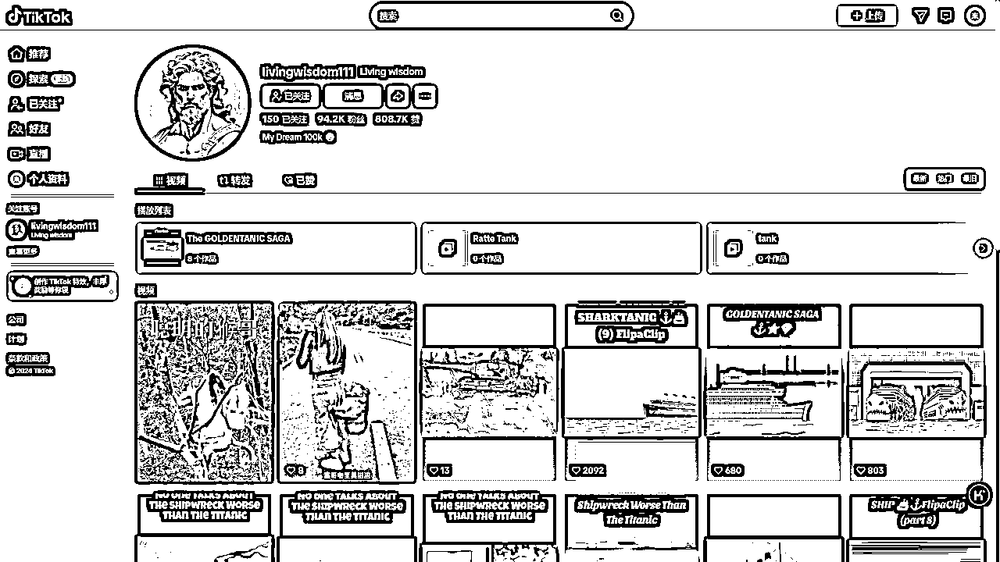
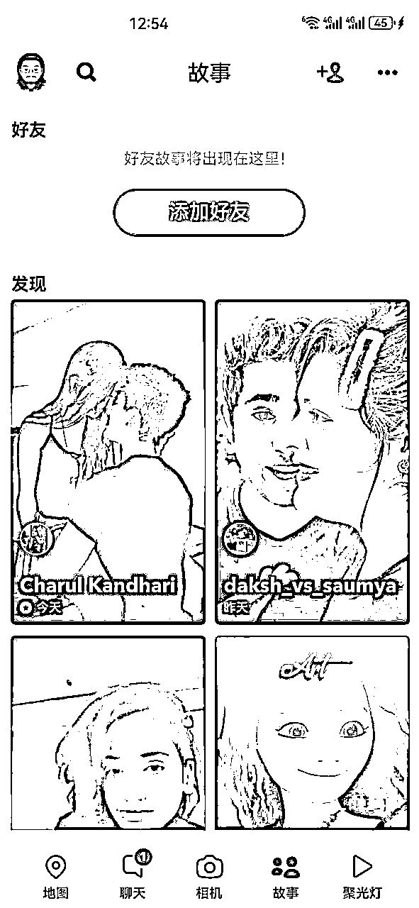
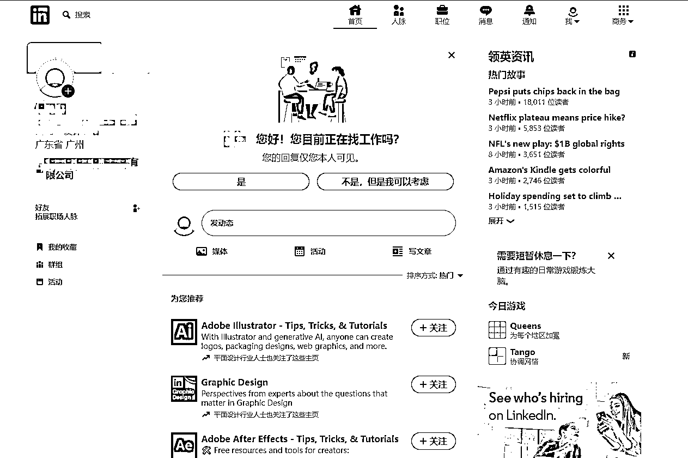

来源：https://duuxkmjwsy.feishu.cn/docx/QAiHd40viosLIyxplC2cKlMinBb






封号较为严重，要严格固定好地域。

使用常见：是基于一般市场接受度和用户反馈的主观评估，并不是基于具体的使用数据。
youtube工具来源：https://www.wpade.com/zh-CN/best-youtube-seo-tools.html
tiktok工具来源：https://www.cifnews.com/article/149693
介绍了8大类常用海外社交软件的营销类型：https://www.woshipm.com/marketing/5245364.html